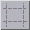
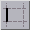
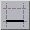
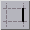
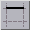
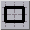

<!-- Documentation XQuad (c)1995-2000 AXENE contact axene@axene.org>
<html>

<head>
<title>Barre horizontale d'icônes &quot;Décoration des cellules&quot;</title>
</head>

<body BGCOLOR="#FFFFFF" BACKGROUND="Images/back.gif" TEXT="#000000">

<p ALIGN="right">  </p>

<p><br>
<br>
La barre d'icônes 'Décoration des cellules' permet d'accéder rapidement à des
fonctions de présentation de la feuille de calcul. Les décorations correspondent à
l'ajout d'une épaisseur aux bords des cellules et à l'attribution d'un motif de fond
coloré aux cellules. Ces fonctions viennent en raccourcis des ornements que l'on peut
définir à partir des boîtes de dialogue '<a HREF="Box_CellPattern.html">Attribution de
fond aux cellules</a>' et '<a HREF="Box_CellBorder.html">Attribution de bords aux cellules</a>'.
<br>
<br>
</p>

<hr>

<p align="center"><br>
 <br>
<small><i>Photo d'écran&nbsp;: Barre d'icônes Décoration des cellules. </i></small></p>

<p><br>
</p>

<hr>

<p><br>
</p>

<h3>Première section de la barre d'icônes&nbsp;:</h3>

<ul>
  <li> <a NAME="noborder_icon">le bouton icône permet d'<b>éliminer
    tous les bords</b> de toutes les cellules sélectionnées. </a></li>
</ul>

<p><br>
</p>

<h3>Seconde section de la barre d'icônes&nbsp;:</h3>

<p>Les bords attribués par les boutons icône de cette section sont de fines lignes
noires (plus épaisses pour les contours). Pour faire des bords personnalisés, il faut
utiliser la boîte de dialogue '<a HREF="Box_CellBorder.html">Attribution de bords aux
cellules</a>'. 

<ul>
  <li> <a NAME="left_icon">le premier bouton icône permet de <b>mettre
    un bord à gauche</b> sur chaque cellule de la sélection. Ce bouton est enfoncé lorsque
    la cellule active est pourvue d'un bord gauche. Cliquer sur ce bouton quand il est
    enfoncé enlève le bord gauche de chaque cellule de la sélection. </a><br>
    &nbsp;</li>
  <li> <a NAME="bottom_icon">le deuxième bouton icône
    permet de <b>mettre un bord en bas</b> sur chaque cellule de la sélection. Ce bouton est
    enfoncé lorsque la cellule active est pourvue d'un bord bas. Cliquer sur ce bouton quand
    il est enfoncé enlève le bord bas de chaque cellule de la sélection. </a><br>
    &nbsp;</li>
  <li> <a NAME="right_icon">le troisième bouton icône
    permet de <b>mettre un bord à droite</b> sur chaque cellule de la sélection. Ce bouton
    est enfoncé lorsque la cellule active est pourvue d'un bord droit. Cliquer sur ce bouton
    quand il est enfoncé enlève le bord droit de chaque cellule de la sélection. </a><br>
    &nbsp;</li>
  <li> <a NAME="top_icon">le quatrième bouton icône permet de
    <b>mettre un bord en haut</b> sur chaque cellule de la sélection. Ce bouton est enfoncé
    lorsque la cellule active est pourvue d'un bord haut. Cliquer sur ce bouton quand il est
    enfoncé enlève le bord haut de chaque cellule de la sélection. </a><br>
    &nbsp;</li>
  <li> <a NAME="around_icon">le dernier bouton icône permet
    d'<b>entourer les régions de cellules sélectionnées</b>. Cliquer sur ce bouton
    entourera chacune des régions de cellules par un trait noir d'épaisseur double. </a></li>
</ul>

<p><br>
</p>

<h3>Troisième section de la barre d'icônes&nbsp;: </h3>

<ul>
  <li> <a NAME="back_colorlist">la liste des couleurs
    permet de <b>changer la couleur du fond</b> pour toutes les cellules sélectionnées. </a></li>
</ul>

<p><br>
</p>

<h3>Quatrième section de la barre d'icônes&nbsp;: </h3>

<ul>
  <li> <a NAME="pattern_icon">le premier bouton icône
    permet de <b>placer un motif gris tramé dans le fond des cellules</b> sélectionnées. Le
    motif proposé en raccourcis est une fine trame de points noirs et blancs. Pour faire des
    fonds personnalisés, il faut utiliser la boîte de dialogue '</a><a HREF="Box_CellPattern.html">Attribution de fonds aux cellules</a>'. <br>
    &nbsp;</li>
  <li> <a NAME="revvideo_icon">le second bouton icône
    permet d'<b>inverser les couleurs entre le fond et le texte</b> (inverse vidéo) des
    cellules sélectionnées. Cette fonction intervertit la couleur de la police de caractère
    avec la couleur d'avant-plan du motif de fond de chaque cellule.<br>
    Si aucun fond n'a été attribué à la cellule, le fond est considéré comme étant
    blanc (le gris de fond de la feuille de calcul est seulement décoratif pour l'affichage
    écran). </a></li>
</ul>

<p><br>
</p>

<hr>

<p ALIGN="right"></p>
</body>
</html>
